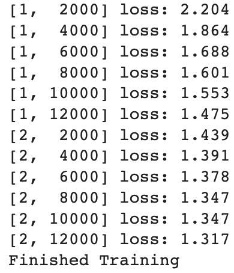
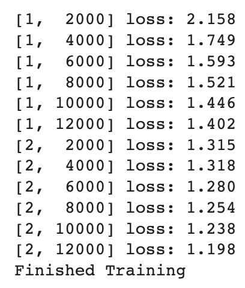

What about data?
can use standard python packages that load data into np array → convert array into torch.*Tensor
Useful packages:
- images: Pillow, OpenCV
- audio: scipy, librosa
- text: raw Python or Cython based loading, or NLTK, SpaCy
For vision: torchvision package has data loader for common datasets like ImageNet, CIFAR10, MNIST, etc. and data transformers for images, viz., torchvision.datasets and torch.utils.data.DataLoader
Demo — ex: CIFAR10 dataset

- Classes: airplane, automobile, bird, cat, deer, dog, frog, horse, ship, truck
- images are of size 3x32x32 (3 channel color images of 32x32 pixels)
Training an image classifier
Steps:
- Load+normalize CIFAR10 training+test datasets using
torchvision - Define CNN
- Define loss fn
- Train net on training data
- Test net on test data
(1) Load+normalize CIFAR10
import torchvision
import torchvision.transforms as transformsoutput of torchvision datasets: PILImage images of range [0, 1] → transform to Tensors of normalized range [-1, 1]
transform = transforms.Compose(
[transforms.ToTensor(),
transforms.Normalize((0.5, 0.5, 0.5), (0.5, 0.5, 0.5))])
batch_size = 4
#check memory
trainset = torchvision.datasets.CIFAR10(root='./data', train=True,
download=True, transform=transform)
trainloader = torch.utils.data.DataLoader(trainset, batch_size=batch_size,
shuffle=True, num_workers=2)
testset = torchvision.datasets.CIFAR10(root='./data', train=False,
download=True, transform=transform)
testloader = torch.utils.data.DataLoader(testset, batch_size=batch_size,
shuffle=False, num_workers=2)
classes = ('plane', 'car', 'bird', 'cat',
'deer', 'dog', 'frog', 'horse', 'ship', 'truck')(2) Define CNN
same as NN code from NN demo — modify to take 3-channel images rather than 1 channel
import torch.nn as nn
import torch.nn.functional as F
#previously 1 channel:
class Net(nn.Module):
def __init__(self):
super(Net, self).__init__()
# 1 input image channel, 6 output channels, 5x5 square convolution
# kernel
self.conv1 = nn.Conv2d(1, 6, 5)
self.conv2 = nn.Conv2d(6, 16, 5)
# an affine operation: y = Wx + b
self.fc1 = nn.Linear(16 * 5 * 5, 120) # 5*5 from image dimension
self.fc2 = nn.Linear(120, 84)
self.fc3 = nn.Linear(84, 10)
def forward(self, x):
# Max pooling over a (2, 2) window
x = F.max_pool2d(F.relu(self.conv1(x)), (2, 2))
# If the size is a square, you can specify with a single number
x = F.max_pool2d(F.relu(self.conv2(x)), 2)
x = torch.flatten(x, 1) # flatten all dimensions except the batch dimension
x = F.relu(self.fc1(x))
x = F.relu(self.fc2(x))
x = self.fc3(x)
return x
#now 3 channel:
class Net(nn.Module):
def __init__(self):
super().__init__()
# 3 input image channels, 6 output channels, 5x5 square convolution
# kernel
self.conv1 = nn.Conv2d(3, 6, 5)
# Max pooling over a (2, 2) window
self.pool = nn.MaxPool2d(2, 2)
self.conv2 = nn.Conv2d(6, 16, 5)
# an affine operation: y = Wx + b
self.fc1 = nn.Linear(16 * 5 * 5, 120) # 5*5 from image dimension
self.fc2 = nn.Linear(120, 84)
self.fc3 = nn.Linear(84, 10)
def forward(self, x):
x = self.pool(F.relu(self.conv1(x)))
# If the size is a square, you can specify with a single number
x = self.pool(F.relu(self.conv2(x)))
x = torch.flatten(x, 1) # flatten all dimensions except the batch dimension
x = F.relu(self.fc1(x))
x = F.relu(self.fc2(x))
x = self.fc3(x)
return x
net = Net()(3) Define loss fn+optimizer
ex. classification cross-entropy loss+SGD w/ momentum
import torch.optim as optim
criterion = nn.CrossEntropyLoss()
optimizer = optim.SGD(net.parameters(), lr=0.001, momentum=0.9)(4) Train net
loop over data iterator+feed inputs to network/optimize
below: 2 passes
for epoch in range(2): # loop over the dataset multiple times
running_loss = 0.0
for i, data in enumerate(trainloader, 0):
# get the inputs; data is a list of [inputs, labels]
inputs, labels = data
# zero the parameter gradients
optimizer.zero_grad()
# forward + backward + optimize
outputs = net(inputs)
loss = criterion(outputs, labels)
loss.backward()
optimizer.step()
# print statistics
running_loss += loss.item()
if i % 2000 == 1999: # print every 2000 mini-batches
print(f'[{epoch + 1}, {i + 1:5d}] loss: {running_loss / 2000:.3f}')
running_loss = 0.0
print('Finished Training')can save trained model:
PATH = './cifar_net.pth'
torch.save(net.state_dict(), PATH)- saving+loading NN modules:
- frequently serialized using a “state dict” — conains all of its parameters+persistent buffers
bn = torch.nn.BatchNorm1d(3, track_running_stats=True)
list(bn.named_parameters())
#output:
#[('weight', Parameter containing: tensor([1., 1., 1.], requires_grad=True)),
# ('bias', Parameter containing: tensor([0., 0., 0.], requires_grad=True))]
list(bn.named_buffers())
#output:
#[('running_mean', tensor([0., 0., 0.])),
# ('running_var', tensor([1., 1., 1.])),
# ('num_batches_tracked', tensor(0))]
#state dict serialization:
bn.state_dict()
#output:
#OrderedDict([('weight', tensor([1., 1., 1.])),
# ('bias', tensor([0., 0., 0.])),
# ('running_mean', tensor([0., 0., 0.])),
# ('running_var', tensor([1., 1., 1.])),
# ('num_batches_tracked', tensor(0))])- recommended to save only state dict — fn
load_state_dict()can restore states from a state dict
torch.save(bn.state_dict(), 'bn.pt')
#torch.load to load state dict from file
bn_state_dict = torch.load('bn.pt')
new_bn = torch.nn.BatchNorm1d(3, track_running_stats=True)
#restore w/ load_state_dict()
new_bn.load_state_dict(bn_state_dict)(5) Test net
check if net has learnt anything — predict class label that net outputs+check against ground-truth
- if prediction is correct → add sample to list of correct predictions
(if loading is necessary)
net = Net()
net.load_state_dict(torch.load(PATH))outputs: energies for 10 classes — higher energy = net thinks that the image is of the particular class more
outputs = net(images)ex. get index of highest energy:
_, predicted = torch.max(outputs, 1)
print('Predicted: ', ' '.join(f'{classes[predicted[j]]:5s}'
for j in range(4)))now look at whole dataset:
correct = 0
total = 0
# since we're not training, don't need to calculate gradients for outputs
with torch.no_grad():
for data in testloader:
images, labels = data
# calculate outputs by running images through the network
outputs = net(images)
# the class with the highest energy is what we choose as prediction
_, predicted = torch.max(outputs.data, 1)
total += labels.size(0)
correct += (predicted == labels).sum().item()
#accuracy of net on 10000 test images:
100 * correct // total
#compare to chance
#chance: 10% accuracycheck classes that performed well vs not well:
#prepare to count preds for each class
correct_pred = {classname: 0 for classname in classes}
total_pred = {classname: 0 for classname in classes}
#no grads needed
with torch.no_grad():
for data in testloader:
images, labels = data
outputs = net(images)
_, predictions = torch.max(outputs, 1)
# collect the correct predictions for each class
for label, prediction in zip(labels, predictions):
if label == prediction:
correct_pred[classes[label]] += 1
total_pred[classes[label]] += 1
#print accuracy for each class
for classname, correct_count in correct_pred.items():
accuracy = 100*float(correct_count) / total_pred[classname]
print(f'Accuracy for class: {classname:5s} is {accuracy:.1f} %')Training on GPU
can transfer NN onto GPU
- define device as first visible cuda device if we have CUDA available
device = torch.device('cuda:0' if torch.cuda.is_available() else 'cpu')
# Assuming that we are on a CUDA machine, this should print a CUDA device:
print(device)recursively go over all modules+conver params/buffers to CUDA tensors:
net.to(device)
#send inputs+targets at every step to GPU too:
inputs, labels = data[0].to(device), data[1].to(device)Exercise: Try increasing the width of your network (argument 2 of the first nn.Conv2d, and argument 1 of the second nn.Conv2d – they need to be the same number), see what kind of speedup you get.
previously: width of 6

now: width of 20

wider network → faster training time